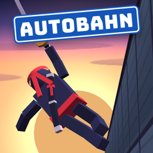

Autobahn Ninja
Endlos-Lauf durch den Verkehr · für iPhone
Drei Spuren Feierabendverkehr, und du bist schneller als alle: Spring über Autos, rutsch unter Monster-Jeeps durch und lauf über LKW-Dächer.
Kontakt
Fragen, Probleme oder Ideen? Schreib uns: support@mooslicht-studios.com
Hilfreich bei Fehlern: iPhone-Modell, iOS-Version und die Spielversion (Einstellungen → Info).
Häufige Fragen
Ich höre keinen Ton.
Ist dein iPhone stumm geschaltet, bleibt auch das Spiel still. Die Lautstärke der Effekte stellst du im Spiel unter Einstellungen → Ton ein.
Wie komme ich in die weltweite Bestenliste?
Melde dich in den iPhone-Einstellungen bei Game Center an. Danach erscheinen deine Rekorde in der Top 100.
Ist mein Spielstand weg, wenn ich ein neues iPhone bekomme?
Der Spielstand liegt nur auf deinem Gerät. Auf ein neues iPhone kommt er mit deinem Backup (iCloud oder Computer).
Ich habe die Steuerung vergessen.
Das Tutorial kannst du jederzeit auf dem Startbildschirm wiederholen.
Sammelt das Spiel Daten?
Nein. Kein Konto, keine Werbung, kein Tracking. Details stehen in der Datenschutzerklärung.
Support (English)
Questions, problems or ideas? Email us: support@mooslicht-studios.com. For bug reports, please include your iPhone model, iOS version and the game version (Settings → Info).
There is no sound.
If your iPhone is on silent, the game stays silent too. Set the effects volume in the game under Settings → Sound.
How do I get onto the worldwide leaderboard?
Sign in to Game Center in your iPhone settings. Your records will then appear in the Top 100.
Will I lose my progress on a new iPhone?
Your progress is stored only on your device. It moves to a new iPhone with your backup (iCloud or computer).
Does the game collect data?
No. No account, no ads, no tracking. See the privacy policy.